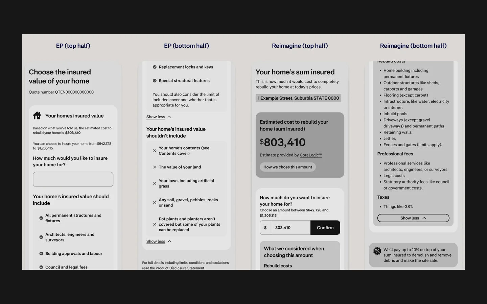
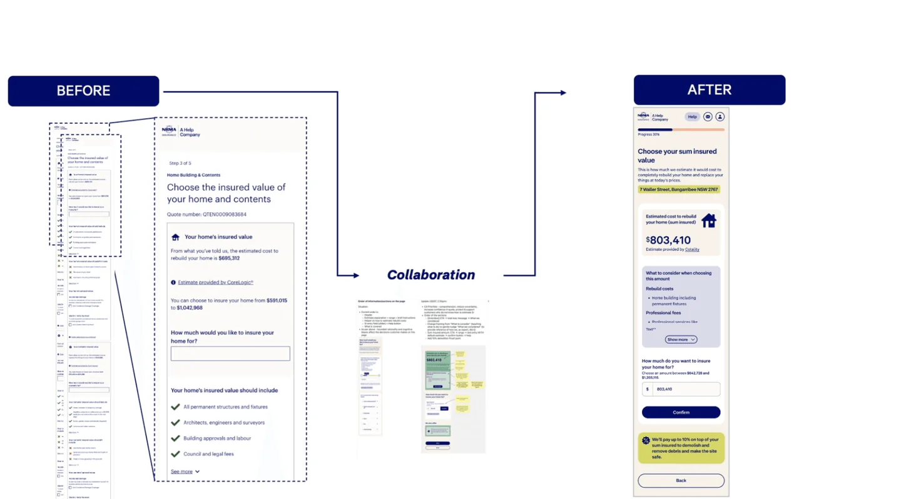

NRMA Sum Insured Discovery
I ran a comparative study with 100 insured homeowners to see whether NRMA’s proposed Sum Insured design made rebuild costs easier to understand and recall.

The context
As part of the NRMA Home Insurance Quote & Buy redesign, I wanted to find out whether the proposed Sum Insured design made rebuild costs easier for homeowners to understand.
What I needed to learn
Before showing any design, we asked homeowners to explain sum insured in their own words. This gave us a baseline for what they would include in a rebuild estimate and how they might work it out.
How I tested it
I split insured homeowners evenly between the existing design and the proposed minimum viable design. Both groups answered the same questions. I compared ratings and open-text feedback with a short quiz on rebuild costs, inclusions and coverage to see what people could recall accurately.


What the study showed
The proposed design scored higher on perceived helpfulness (+9.6%) and clarity (+7.8%). Participants retained more accurate information, and the strongest trust gain was in perceived insurer competence (+10%). These were findings from the comparative study. They gave us a direction for the next design iteration: keep what helped people understand the estimate and explain rebuild costs in plainer language.
- participants in the study
- 100
- perceived confidence
- +11.9%
- perceived comprehension
- +9.8%